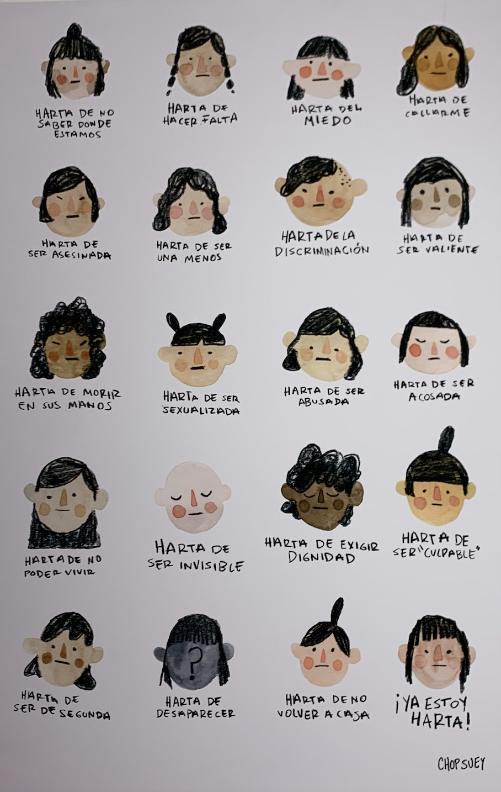

"When he asked me, "why are you wearing a different perfume?" He already had his own answer, because it was Tuesday and I was going to class with a male professor. I answered something random because I felt the necessity to defend myself despite the stupid question."- Aurelia Cortés
"When he interrupted me while I was on the phone, it was just to make sure that nobody else was taking my time besides him. That only he was capable of being my source of entertainment and company."- Aurelia Cortés
"When he had the intention of killing me (I saw it through his eyes), he directed his energy towards one goal, the goal of soffocating me. He wanted to do with his hands what he had already done with actions and words: drown my voice." - Aurelia Cortés
"I have always to be a teacher, it was my vocation. The children I teach always tell me stories and about their personal lives. One child told me "Teacher! Can you believe it? There was a dead girl behind the supermarket. Naked." Violence against children is also violence against woman." -Carola Diez
"I cannot walk without the fear of someone touching me because I have been touched many times" -Hayley Mogollon
"I have to do something. I cannot continue to feel this agony and disgust, and this "impotencia" due to many cruel and unjust killings" -Isaura Miranda
"I can drive long distances in a car by myself in the US. For example, I can drive from San Diego to Los Angeles without a problem. In Mexico, I fear driving by myself and there is no way I can drive by myself long distances. I could be kidnapped and stopped for no reason." -Isabel Duclaud
"I have a family member that said that he is angy with feminists because they are highliting a problem that everyone faces, not just women. He says that men are killed also and that they can also be harrased." -Hayley Mogollon Coppel
This image depicts different women which show some of Mexican women's thoughts including "I am tired of being afraid," "I am tired of being quiet," "I am tired of being brave," "I am tired of being afraid," "I am tired of being abused," "I am tired of being sexualized," "I am tired of being invisiblde," "I am tired of not returning home," "I am tired!"tired